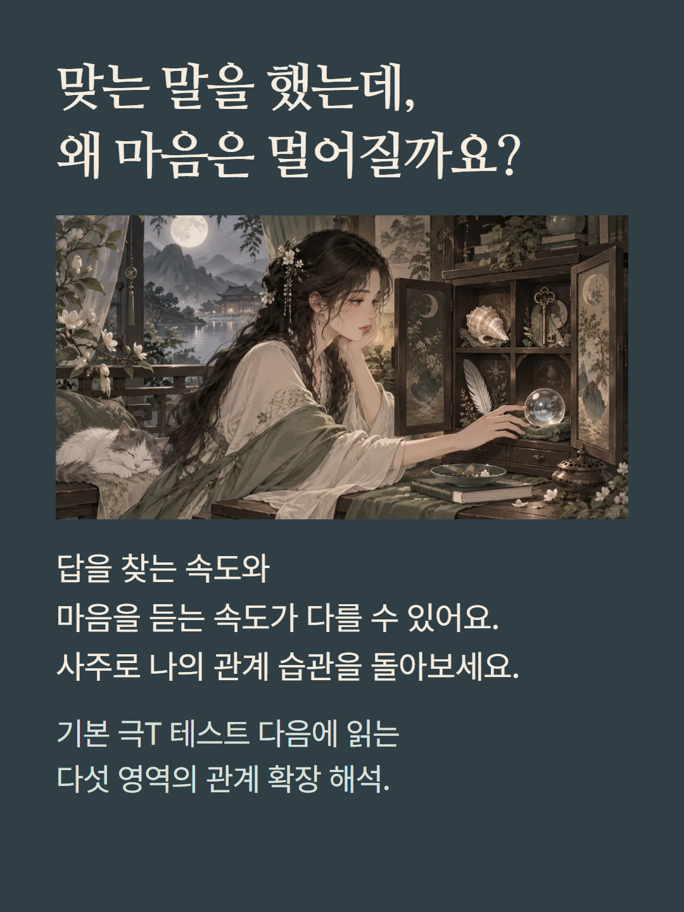
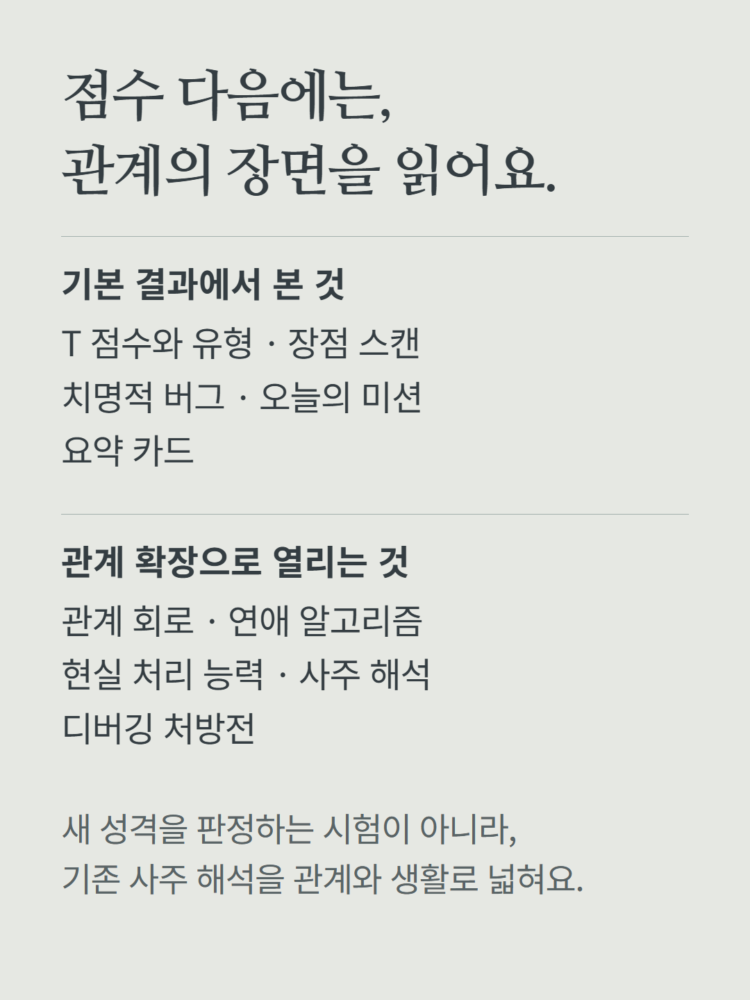
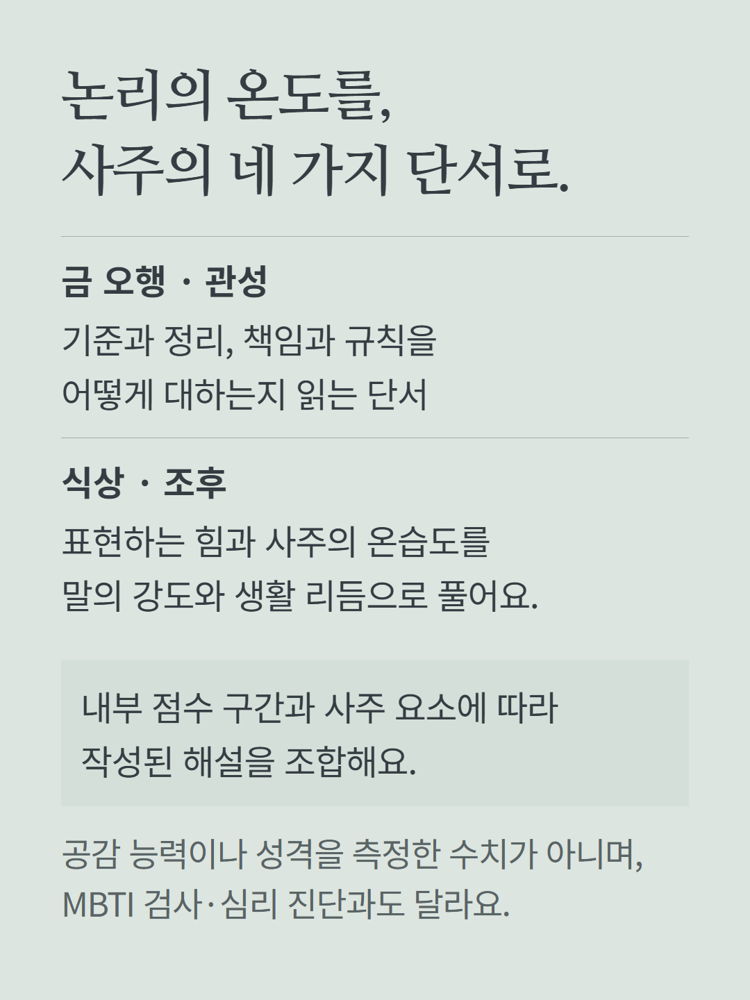
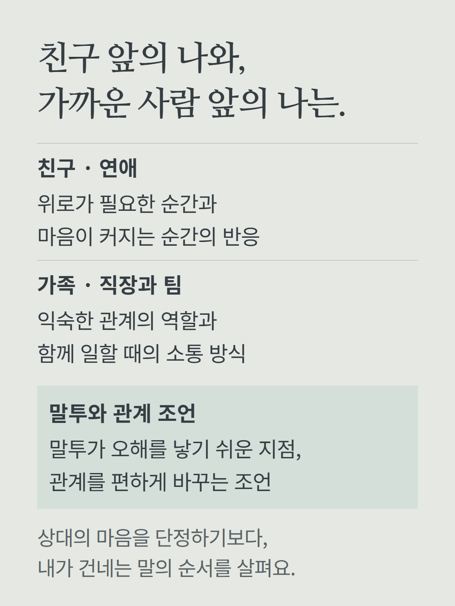
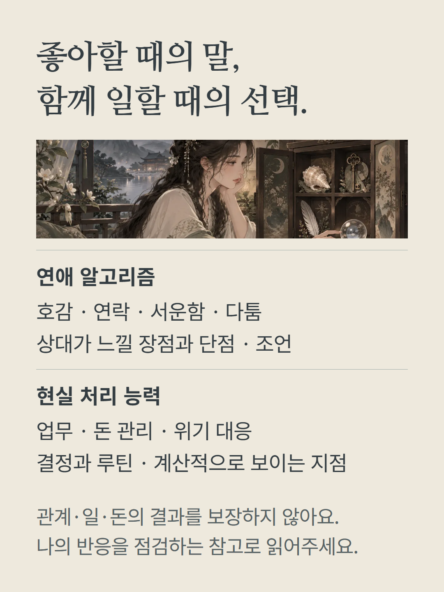
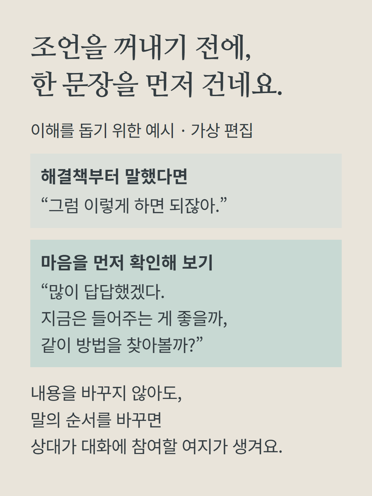
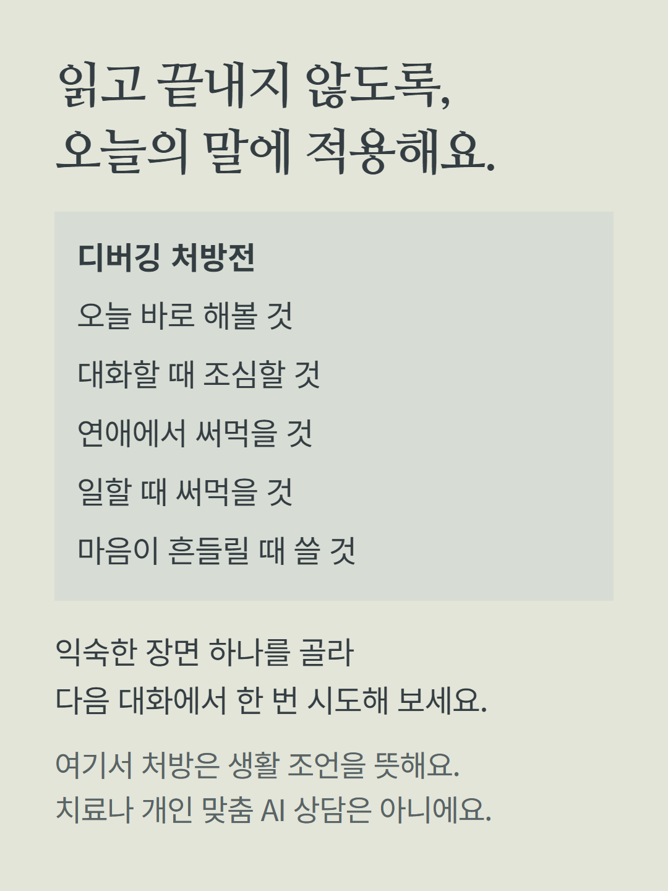
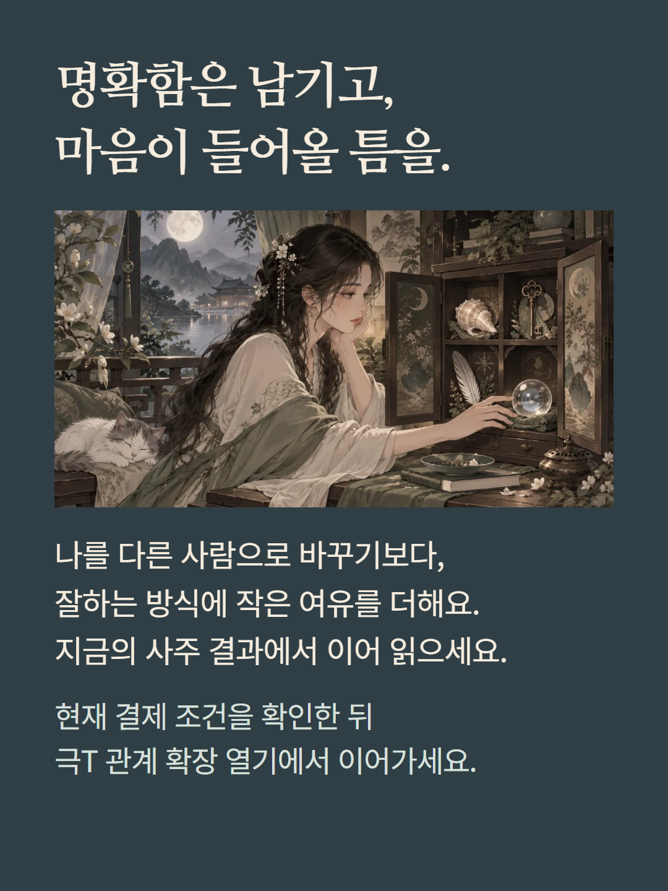

사주 기반 극T 테스트의 관계 확장 해석입니다. 기본 결과에서 제공하는 점수·유형·장점·치명적 버그·오늘의 미션·요약 카드와 구분하여, 관계 회로·연애 알고리즘·현실 처리 능력·사주 기반 극T 해석·디버깅 처방전의 다섯 영역을 추가로 엽니다. 사주의 금 오행·관성·식상·조후를 내부 규칙으로 조합한 로컬 콘텐츠이며 숙요 궁합, MBTI 검사, 심리·의학 진단, 실제 공감 능력의 측정이 아닙니다. 유형과 상황에 따라 작성된 문구를 조합하며 AI 질문 상담은 포함하지 않습니다. 예시는 이해를 돕기 위한 가상 편집이며 실제 고객 결과나 구매 후기가 아닙니다. 관계 개선·수익·직업 성과를 보장하지 않습니다. 현재 화면에서 이용권·월정석·단건 결제의 적용 조건을 확인해 주세요.